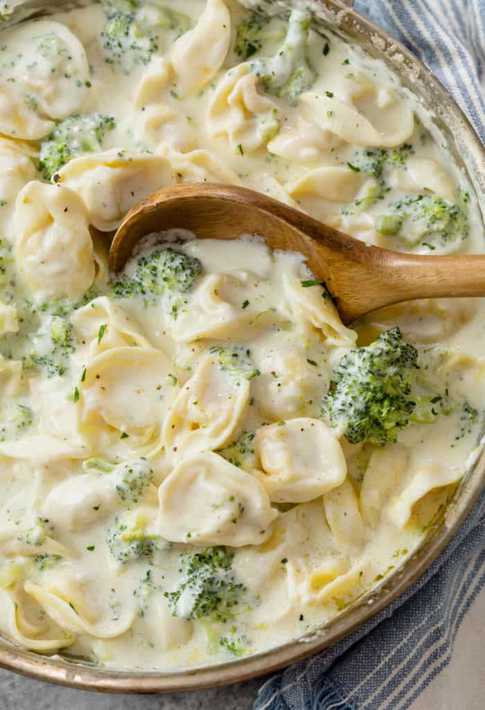

Broccoli Alfredo Tortellini Recipe

Description
This Broccoli Alfredo Tortellini is a meal that appeals to pretty much everyone and it is vegetarian on its own, but you can easily add grilled chicken to it. It’s an easy recipe that is packed with cheese flavor. Made with cheese tortellini, you get lots of cheese flavor from the tortellini, plus there’s a full cup of Parmesan cheese added to the sauce.
Broccoli Alfredo Tortellini comes together quickly. You can have it on the table in under 30 minutes. Serve it with a loaf of crusty bread and there won’t be a single tortellini left. Guarantee.
Ingredients
- 6 cups broccoli florets
- 1(12-ounce) package refrigerated cheese tortellini
- 3 tablespoons butter
- 1/2 onion,,chopped
- 3 cloves garlic,,minced
- 1/4 teaspoon red pepper flakes
- pinch of nutmeg
- 2 cups half & half
- 1 cup freshly grated paremesan cheese,, save a lil extra for serving
- salt & pepper
Preparation Steps
- Steam broccoli until tender and cook tortellini according to package directions, setting aside 1/4 cup of cooking liquid just before draining pasta. Alternatively, you can add the broccoli to the pasta water for the last 2-3 minutes of cooking the tortellini instead of steaming it. Drain well.
- While tortellini is cooking, melt the butter in a large pan over medium heat. Add onion and cook for 2 minutes.
- Add garlic, red pepper flakes and nutmeg. Cook for an additional 2 minutes.
- Pour in the half & half, bring it to a simmer. Simmer for 2-3 minutes.
- Add parmesan cheese and turn heat to low. Once cheese is melted add tortellini and broccoli, plus cooking liquidd. Stir to combine everything well and cook a few minutes to thicken the sauce.
- Season to taste with salt and pepper. Serve with addition parmesan.
Home